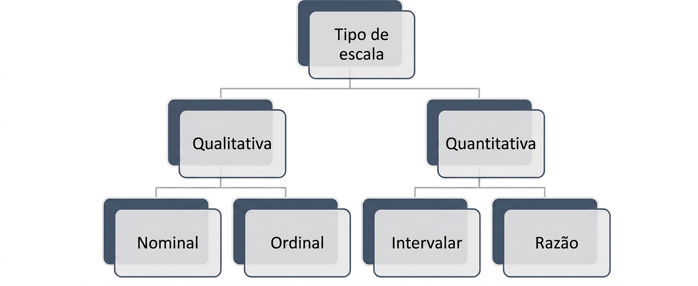
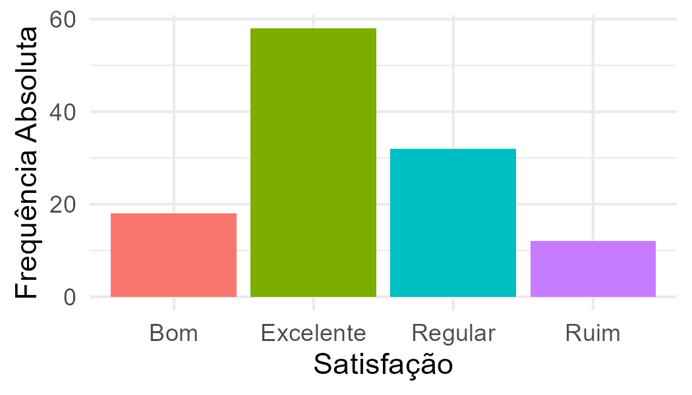

10 Ago 2026
Workshop de Linguagem R
Sessão prática sobre modelação e testes de hipóteses na próxima semana.

Publicados os horários de atendimento e calendário das aulas do 2.º Ciclo.

As Inscrições decorrem até ao dia 28 de Agosto.
Sessão prática sobre modelação e testes de hipóteses na próxima semana.

Abertura de candidaturas para acompanhamento em Ciências Naturais.

Novos manuais de Bioestatística e Metodologia Científica no repositório.

Conteúdos demonstrativos e resolução de exercícios no canal.

Atendimento presencial e online mediante agendamento prévio.
pnorm(35, mean = 40, sd = 2, lower.tail = FALSE)pnorm(35, mean = 40, sd = 2, lower.tail = FALSE)Descubra como analisar e resumir as características de uma única variável. Explore distribuições de frequência, gráficos explicativos e tabelas organizadas para compreender o comportamento dos seus dados de forma isolada.
Explorar VariávelAcesse as principais métricas para sintetizar seus conjuntos de dados. Calcule e interprete com facilidade medidas de tendência central (média, mediana e moda) e de dispersão (variância, desvio-padrão e amplitude).
Ver MedidasAnalise a relação e a dependência entre duas variáveis distintas. Identifique padrões, correlações, diagramas de dispersão e tabelas de contingência para cruzar informações com precisão.
Analisar RelaçõesAplicações Práticas: A Estatística fornece aos decisores ferramentas quantitativas para fundamentar opções estratégicas com níveis de confiança mensuráveis, reduzindo a subjetividade mesmo em cenários de elevada incerteza ou de escassez de dados.População (ou Universo): Conjunto de todos os elementos (indivíduos, objetos ou eventos) que partilham pelo menos uma característica comum e que constituem o objeto de estudo.

Aplicações Práticas: Um conjunto de dados (dataset) raramente é composto por um único tipo de escala, integrando habitualmente variáveis métricas e não métricas. A articulação entre diferentes níveis de mensuração enriquecem as análises empíricas e possibilita a aplicação de modelos estatísticos avançados voltados à tomada de decisão fundamentada.
Descubra como analisar e resumir as características de uma única variável. Explore distribuições de frequência, gráficos explicativos e tabelas organizadas para compreender o comportamento dos seus dados de forma isolada.
Explorar VariávelAcesse as principais métricas para sintetizar seus conjuntos de dados. Calcule e interprete com facilidade medidas de tendência central (média, mediana e moda) e de dispersão (variância, desvio-padrão e amplitude).
Ver Medidas| Tipo sanguíneo | A+ | A- | B+ | B- | AB+ | AB- | O+ | O- |
|---|---|---|---|---|---|---|---|---|
| Doadores | 15 | 2 | 6 | 1 | 1 | 1 | 32 | 2 |
| Tipo Sanguíneo | Doadores ($F_i$) | $Fri$ (%) | $Fi_{ac}$ | $Fri_{ac}$ (%) |
|---|---|---|---|---|
| A+ | 15 | 25 | 15 | 25 |
| A- | 2 | 3.33 | 17 | 28.33 |
| B+ | 6 | 10 | 23 | 38.33 |
| B- | 1 | 1.67 | 24 | 40 |
| AB+ | 1 | 1.67 | 25 | 41.67 |
| AB- | 1 | 1.67 | 26 | 43.33 |
| O+ | 32 | 53.33 | 58 | 96.67 |
| O- | 2 | 3.33 | 60 | 100 |
| Total | 60 | 100 | — | — |
| Classes | $F_i$ | $Fri$ (%) | $Fi_{ac}$ | $Fri_{ac}$ (%) |
|---|---|---|---|---|
| 3.5 ⊢ 4.5 | 5 | 16.67 | 5 | 16.67 |
| 4.5 ⊢ 5.5 | 9 | 30 | 14 | 46.67 |
| 5.5 ⊢ 6.5 | 7 | 23.33 | 21 | 70 |
| 6.5 ⊢ 7.5 | 7 | 23.33 | 28 | 93.33 |
| 7.5 ⊢ 8.5 | 1 | 3.33 | 29 | 96.67 |
| 8.5 ⊢ 9.5 | 1 | 3.33 | 30 | 100 |
| Total | 30 | 100 | ----- | ----- |
| Satisfacao | Frequencia |
|---|---|
| Excelente | 58 |
| Bom | 18 |
| Regular | 32 |
| Ruim | 12 |
pnorm(35, mean = 40, sd = 2, lower.tail = FALSE)
Descubra como analisar e resumir as características de uma única variável. Explore distribuições de frequência, gráficos explicativos e tabelas organizadas para compreender o comportamento dos seus dados de forma isolada.
Explorar VariávelAcesse as principais métricas para sintetizar seus conjuntos de dados. Calcule e interprete com facilidade medidas de tendência central (média, mediana e moda) e de dispersão (variância, desvio-padrão e amplitude).
Ver MedidasAnalise a relação e a dependência entre duas variáveis distintas. Identifique padrões, correlações, diagramas de dispersão e tabelas de contingência para cruzar informações com precisão.
Analisar RelaçõesAnalise a relação e a dependência entre duas variáveis distintas. Identifique padrões, correlações, diagramas de dispersão e tabelas de contingência para cruzar informações com precisão.
Analisar Relações| 5,7 | 6,5 | 6,9 | 8,3 | 8,0 | 4,2 | 6,3 | 7,4 | 5,8 | 6,9 |
Nota: Quando uma variável discreta apresenta valores repetidos, os dados são habitualmente organizados numa tabela de distribuição de frequências. Nesse cenário, o cálculo da média segue a mesma lógica da média ponderada, em que o "peso" de cada valor distinto $X_i$ corresponde à sua frequência absoluta ($f_i$). Adicionalmente, o somatório passa a ser efetuado sobre as $k$ categorias ou valores distintos ($i = 1, 2, \dots, k$), e não sobre o total de $n$ observações individuais..
| Período | Nota | Peso |
|---|---|---|
| 1º Bimestre | 4.5 | 1 |
| 2º Bimestre | 7.0 | 2 |
| 3º Bimestre | 5.5 | 3 |
| 4º Bimestre | 6.5 | 4 |
| Ativo | Retorno (%) | % Investimento |
|---|---|---|
| Banco do Brasil ON | 1.05 | 10 |
| Bradesco PN | 0.56 | 25 |
| Eletrobrás PNB | 0.08 | 15 |
| Gerdau PN | 0.24 | 20 |
| Vale PN | 0.75 | 30 |
| Notas | 1 | 2 | 3 | 4 | 5 | 6 | 7 | 8 | 9 | 10 |
|---|---|---|---|---|---|---|---|---|---|---|
| N.º Entrevistados | 9 | 12 | 15 | 18 | 24 | 26 | 5 | 7 | 3 | 1 |
Importante : Se $\text{Pos}(Q_1) = 3{,}75$, o valor encontra-se entre a 3.ª e a 4.ª posição ordenada ($X_{(3)}$ e $X_{(4)}$), estando 75% mais próximo da 4.ª posição: $$Q_1 = 0{,}25 \cdot X_{(3)} + 0{,}75 \cdot X_{(4)}$$.
Conheça os cursos de licenciatura e pós-graduação disponíveis na USTP, distribuídos por várias áreas do saber.
Ver CursosInformações úteis para os estudantes, incluindo regulamentos, direitos e deveres, associações e oportunidades disponíveis.
Área do EstudanteConheça os cursos de licenciatura e pós-graduação disponíveis na USTP, distribuídos por várias áreas do saber.
Ver CursosConheça os cursos de licenciatura e pós-graduação disponíveis na USTP, distribuídos por várias áreas do saber.
Ver CursosInformações úteis para os estudantes, incluindo regulamentos, direitos e deveres, associações e oportunidades disponíveis.
Área do EstudanteConheça os cursos de licenciatura e pós-graduação disponíveis na USTP, distribuídos por várias áreas do saber.
Ver CursosInformações úteis para os estudantes, incluindo regulamentos, direitos e deveres, associações e oportunidades disponíveis.
Área do EstudanteConheça os cursos de licenciatura e pós-graduação disponíveis na USTP, distribuídos por várias áreas do saber.
Ver CursosInformações úteis para os estudantes, incluindo regulamentos, direitos e deveres, associações e oportunidades disponíveis.
Área do EstudanteConheça as oportunidades de apoio financeiro disponíveis para os estudantes, incluindo bolsas de estudo e outras ajudas.
Ver BolsasConheça os cursos de licenciatura e pós-graduação disponíveis na USTP, distribuídos por várias áreas do saber.
Ver CursosInformações úteis para os estudantes, incluindo regulamentos, direitos e deveres, associações e oportunidades disponíveis.
Área do EstudanteEm repetições repetidas do processo de amostragem, aproximadamente $100(1 - \alpha)$% dos intervalos construídos conterão o verdadeiro valor de $p$.Diferentemente da estimação pontual — que fornece apenas um único valor como estimativa — a estimação por intervalo fornece um conjunto de valores plausíveis para o parâmetro de interesse, permitindo quantificar a incerteza associada à estimativa. Seja $\theta$ um parâmetro populacional e $\hat{\theta}$ um estimador de $\theta$. Com base na distribuição de probabilidade de $\hat{\theta}$, é possível construir um intervalo da forma: $$ \hat{\theta}_1 \leq \theta \leq \hat{\theta}_2, $$ tal que a probabilidade de o intervalo conter o verdadeiro valor do parâmetro seja $(1 - \alpha)$, denominado nível de confiança. O valor $\alpha \in (0,1)$ representa o nível de significância, isto é, a probabilidade de o intervalo não conter o parâmetro. Então $ 1 - \alpha = \text{nível de confiança}. $ Um intervalo de confiança (IC) é, portanto, um intervalo aleatório que, em repetidas amostragens, contém o verdadeiro valor do parâmetro em aproximadamente $100(1 - \alpha)\%$ dos casos. Formalmente, se $U$ e $V$ são estatísticas tais que $$ P\left[(U < \theta < V )\mid \theta\right]=1 - \alpha, $$ então $(U, V)$ é um intervalo de confiança para $\theta$ com nível $100(1 - \alpha)\%$. A amplitude do intervalo está diretamente relacionada à incerteza da estimação: intervalos mais largos indicam maior incerteza, enquanto intervalos mais estreitos indicam maior precisão.
Métodos para obtenção de estimadores pontuais de parâmetros.
Repositório de materiais de apoio pedagógico, guias metodológicos e referências bibliográficas.
Conheça os cursos de licenciatura e pós-graduação disponíveis na USTP, distribuídos por várias áreas do saber.
Ver CursosInformações úteis para os estudantes, incluindo regulamentos, direitos e deveres, associações e oportunidades disponíveis.
Área do EstudanteConheça as oportunidades de apoio financeiro disponíveis para os estudantes, incluindo bolsas de estudo e outras ajudas.
Ver BolsasConheça as oportunidades de apoio financeiro disponíveis para os estudantes, incluindo bolsas de estudo e outras ajudas.
Ver BolsasSumários detalhados das matérias lecionadas.
| Nome do Ficheiro | Data de Modificação | Tamanho |
|---|---|---|
| Apendice_B.html | 15-Feb-2018 00:40 | 992307 |
| Tabela t-Student.pdf | 15-Feb-2018 00:41 | 980182 |
Segue uma distribuição $t$ de Student com $n - 1$ graus de liberdade. Consulte a Tabela t-Student.
Para propostas de funções docentes ou assuntos administrativos, entre em contacto: